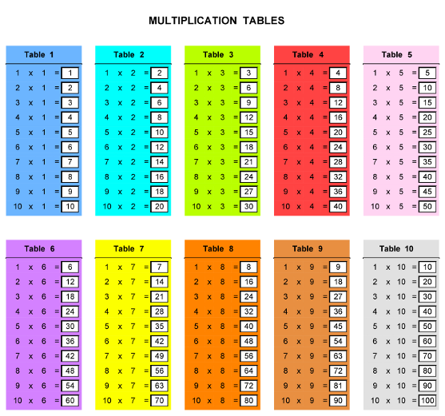
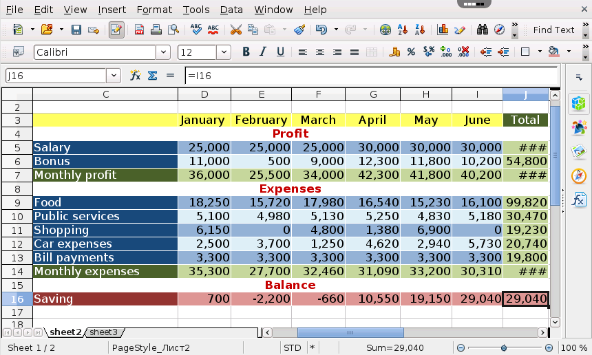
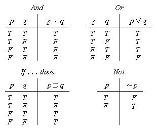

| Name | Surname | Favourite Source | Home Town |
|---|---|---|---|
| Speciose | Kamanzi | Mushroom Sauce | Cape Town |
| Jean | Windvogel | Chilli sauce | Cape Town |
| Claude | Kinga | Tabasko | Johannesberg |
| Miguel | Jacobs | Nando's Peri-Peri | Cape Town |
| Diteboho | Moahloli | Sweet Chilli | Cape Town |
| Chad | Masella | Tomato Sauce | Cape Town |
| John-Paul | Golding | Nando's Peri-Peri | Cape Town |
| Odwa | Kula | Steers BBQ Sauce | Cape Town |
| Jadon | Paulse | BBQ | Cape Town |
| Rustin | Cassiem | Chilli | Cape Town |
| Umr | Rajap | Peri-Peri | Cape Town |
| Vicario | Williams | Sweet Chilli | Cape Town |
| Claire | Jacobs | Mushrom Sauce | Cape Town |
| Aqueelah | Taljaard | Mayonaise | Cape Town |
| Reece | Dodgen | Nando's Peri-Peri | Cape Town |
| Jamie-Lee | Cupido | Perinaise | Cape Town |
| Michael | Notyahawa | Tomato Sauce | Cape Town |
Specific Situations In Which Tables Are Routinely Used:
A table of contents, usually headed simply Contents and abbreviated informally as TOC, is a list, usually found on
a page before the start of a written work, of its chapter or section titles or brief descriptions with their commencing
page numbers.Usually it includes the titles or descriptions of the first-level headers, such as chapter titles in longer
works,and often includes second-level or section titles within the chapters as well, and occasionally even third-level
titles.The depth of detail in tables of contents depends on the length of the work, with longer works having less.
Formal reports (ten or more pages and being too long to put into a memo or letter) also have a table of contents.
Within an English-language book, the table of contents usually appears after the title page, copyright notices, and,
in technical journals, the abstract; and before any lists of tables or figures, the foreword, and the preface.
Mathematical tables are lists of numbers showing the results of calculation with varying arguments, before calculators
were cheap and plentiful, people would use such tables to simplify and drastically speed up computation. Tables of
logarithms and trigonometric functions were common in math and science textbooks. Specialized tables were published
for applications such as astronomy, celestial navigation and statistics.
The periodic table is a tabular arrangement of chemical elements, ordered by their atomic number, electron configuration,
and recurring chemical properties, whose adopted structure shows periodic trends. Generally, within one row (period) the
elements are metals on the left, and non-metals on the right, with the elements having similar chemical behaviours being
placed in the same column. Table rows are called periods. Columns are called groups. Six groups have accepted names
as well as assigned numbers: for example, group 17 elements are halogens; and group 18 are noble gases. Also displayed
are four simple rectangular areas or blocks associated with the filling of different atomic orbitals.
Database systems often store data in structures called tables; in which columns are data fields and rows represent data records.
Modern software applications give users the ability to generate, format, and edit tables and tabular data for a wide
variety of uses, for example:
 
